In this first part of the course, we will explain the techniques for maximising the efficiency of Cargo for malware design.
Optimising Cargo involves configuring it to reduce the size of the final binary, as well as ensuring that the code generated contains no compromising indicators, thus guaranteeing that any signatures recognisable by security solutions are hidden.
This course will immerse you in Cargo's features, exploiting its compilation, dependency and configuration management capabilities to bypass traditional defences and avoid detection.
To do this, we will start with this simple project (download the code in the appendix):
.
├── Cargo.toml
├── Cargo.lock
└── src
└── main.rs
# src/main.rs
fn main() {
println!("Hello, world!");
}
We'll compile it with the default configuration and analyse the result:
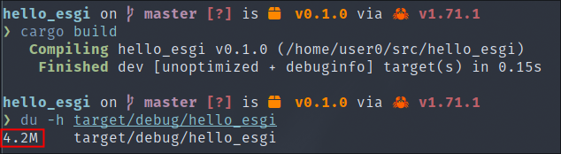
What ?? Our little "hello world" program produce a 4.2 Mo size binary ??
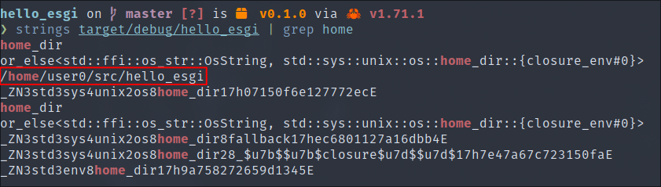
Using the strings utility, which will extract all the strings in plain text in a binary, we can also find compromising indicators such as our user name user0 and the name of the binary at compilation time.
And if we start playing around with a debugger such as the gdb utility, we can even go back to the original source code :
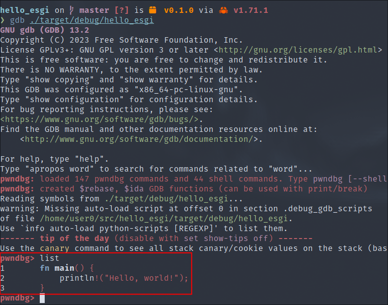
The list command in gdb is used to rebuild the source code from the debugging symbols.
By default, Rust optimises execution speed, compilation speed and ease of debugging rather than binary size, because for the vast majority of applications this is ideal.
But in the context of malware development, a malicious actor is desperate to reduce the size of its binaries for the following reasons:
And Cargo provides us with several mechanisms to achieve this.
Profiles allow you to change compiler settings and influence things like optimisations and debugging symbols.
Cargo has four built-in profiles: dev used by default, release, test and bench. The profile is automatically chosen according to the command being executed if no profile is specified on the command line. In addition to the built-in profiles, user-defined custom profiles can also be specified.
The release profile is used for optimised artefacts used for production, and removes some of the debugging symbols.
To apply this profile, simply compile with the --release option or just -r :
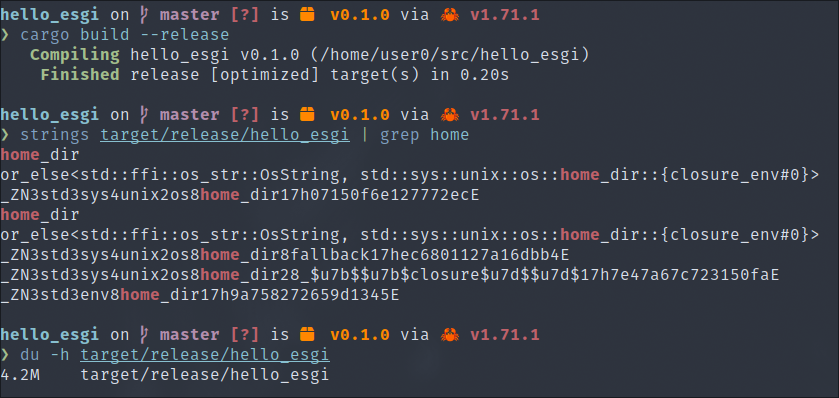
Well, now our binary is optimised and there's no trace of my user name. We've also removed the possibility of reconstructing the source code just as easily :
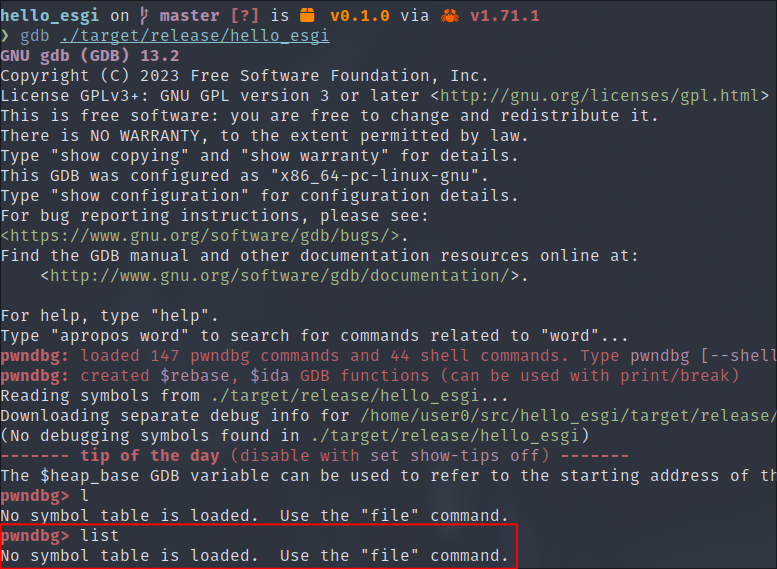
However, the size of the binary is still abnormally large and there are still traces, such as the name of the program at compile time :
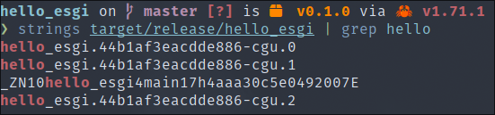
Profile parameters can be modified in Cargo.toml using the [profile] table. In each profile, individual parameters can be modified with key/value pairs such as these:
# Cargo.toml
# Configuration par défaut du profile "dev", utlisé avec `cargo build`
[profile.dev]
opt-level = 0
debug = true
...
# Configuration par défaut du profile "release", utlisé avec `cargo build --release`
[profile.release]
opt-level = 3
debug = false
...
opt-level :🔗The "opt-level" key controls the level of optimisation. Higher levels of optimisation can result in faster code execution at the expense of longer compilation times. Higher levels can also modify and reorganise compiled code, which can make it more difficult to use with a debugger. Possible values are :
0: no optimisation (used by the "dev" profile)1: basic optimisation2: some optimisations3: all optimisations (used by default by the "release" profile)s: optimised for binary sizez: optimised for bit size and loop vectorisation disabled.For our malware, we'll choose the value s to take advantage of the binary size optimisation without changing the default behaviour too much. You are invited to test different values depending on the libraries used, which may have an impact.
strip :🔗The strip key controls the presence or absence of debugging symbols. Given that these are not necessary data for program execution and that the last thing we want is for someone to debug our malware, we're going to have the pleasure of removing them.
Cargo allows us to do this by setting the strip key to the value true.
This action can also be performed on Linux with the strip utility.
"Link Time Optimization" is a feature of LLVM, Rust's intermediate compiler, designed to optimise the work of the linker. Its aim is to rationalise the linking process by enabling in-depth optimisation, in particular by eliminating unused portions of code. As a result, the aim is to reduce the size of the final binary.
Cargo allows us to use this option by setting the lto key to true.
panic :🔗The panic key is used to control the behaviour of our program when it "panics" (can be called with the 'panic!' macro). In Rust, a panic occurs when the program encounters an error that is deemed irrecoverable.
The possible values are :
unwind: default value, which instructs the program to unwind the stack to produce a useful trace for debugging. In our situation, we absolutely don't want our malware to leave any more information and this takes up space in our binary.abort: the program will terminate immediately. So it's more advantageous for us.Cargo lets us control this option by setting the "panic" key to the "abort" value.
Let's analyse the results of the many optimisations we have made to our Cargo.toml file:
# Cargo.toml
[package]
name = "hello_esgi"
version = "0.1.0"
edition = "2021"
[dependencies]
[profile.release]
opt-level = "s"
strip = true
lto = true
panic = "abort"
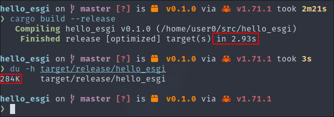
As you can see from the screenshot above, the compilation did take a little longer, but the size of our binary was reduced from 4.2 Mo to just 284 Ko.
Now we're going to add another test for our optimisation, we're going to modify the source code to force our program to panic:
# src/main.rs
fn main() {
println!("Hello, world!");
panic!();
}
Then we'll run it again, this time without the optimisations:
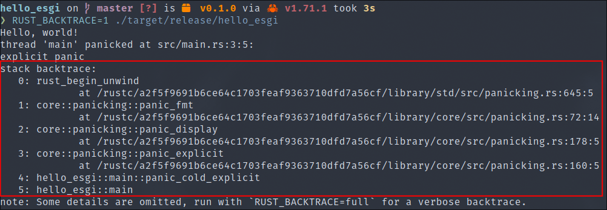
Then with our optimisations :
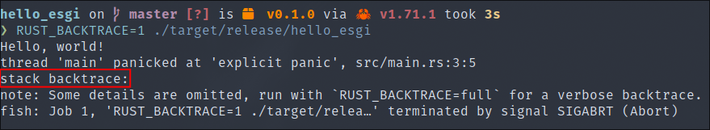
The benefits are clear to see, given that it no longer leaks sensitive information in relation to our malware's source code.
However, there's one more annoying detail in this screenshot. The program shows the code file where it panicked ("src/main.rs") as well as the position (line 3, column 5). At first glance, this may not seem very important, but in reality it could provide a serious clue to an analyst examining our malware, for example if our program panics in an external library.
To solve this problem, we need to explore more advanced settings that require the use of Rust compiler options that have been implemented but are not yet considered stable.
We will need to use the nightly toolchain, which is the compilation tool suite updated daily with the latest Rust :
rustup install nightly
This command will install the necessary toolchain.
We will then specify that our project uses this toolchain using the "rust-toolchain.toml" file that we will add:
.
├── Cargo.lock
├── Cargo.toml
├── rust-toolchain.toml # New file
├── src/
├── main.rs
With the following content:
# rust-toolchain.toml
[toolchain]
channel = "nightly"
We can now use "unstable" compiler features.
location-detail :🔗The unstable location-detail option, which is passed directly to the rustc compiler, is used to control the amount of factual detail, such as file, row and column, emitted when using the caller_location() function called when a Rust program panics.
In our situation, we absolutely do not want to deliberately divulge this type of information. So we're going to pass the compiler the location-detail=none argument. Normally passed to the like this :
rustc -Zlocation-detail=none main.rs
To pass options to the compiler, we need to add a configuration to Cargo in a config.toml file, not to be confused with the Cargo.toml file which is used to specify dependencies, project details and project parameters, whereas config.toml is a configuration file which uses more advanced features and can be configured per project or globally.
.
├── .cargo/ # New file
├── config.toml # New file
├── Cargo.lock
├── Cargo.toml
├── rust-toolchain.toml
├── src/
├── main.rs
And finally added the contents of the :
# .cargo/config.toml
[build]
rustflags = ["-Zlocation-detail=none"]
Now all we have to do is recompile :
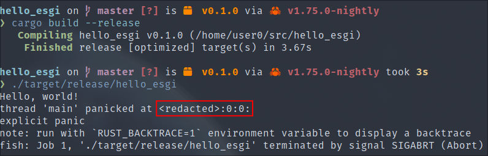
The compromising information has now been removed.
build-std :🔗Rust provides a precompiled version of the standard library (std) with its toolchain. This means we don't need to recompile std every time we compile our malware. And remember that the standard library is statically linked to our binary, of course.
Although this is very practical, for us malware developers there are several disadvantages:
This is where build-std comes in. The build-std functionality is capable of compiling the standard library with our malware from source. It does this using the rust-src component provided by rustup:
rustup component add rust-src --toolchain nightly
You can now control how the standard library is compiled by adding the following configuration:
# .cargo/config.toml
[unstable]
build-std = ["std", "panic_abort"] # Add build-std
[build]
rustflags = ["-Zlocation-detail=none"]
#target = "x86_64-pc-windows-gnu" # For Windows
target = "x86_64-unknown-linux-gnu" # For Linux
When using build-std it is also necessary to specify our compilation target.
We can now see a further reduction in the size of our binary :
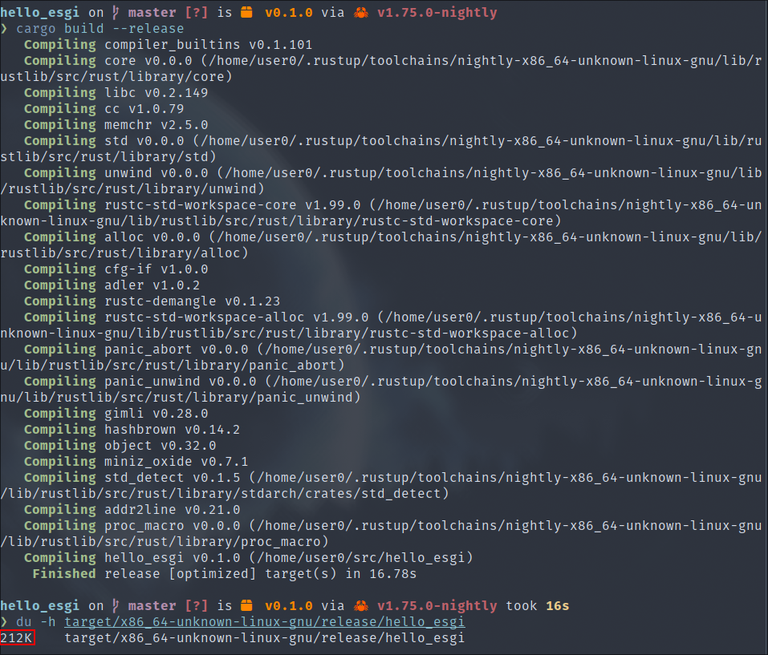
panic_immediate_abort :🔗Even though panic = "abort" specified in Cargo.toml is supposed to disable the code executed when a program panics, the Rust compiler will still include the panic strings and formatting code in the final binary by default. An unstable panic_immediate_abort feature has been built into the nightly compiler to solve this problem.
To use it, repeat the instructions above to use build-std, and also add the following configuration:
# .cargo/config.toml
[unstable]
build-std = ["std", "panic_abort"]
build-std-features= ["panic_immediate_abort"] # Add new feature
[build]
rustflags = ["-Zlocation-detail=none"]
#target = "x86_64-pc-windows-gnu"
target = "x86_64-unknown-linux-gnu"
Then look at the result: 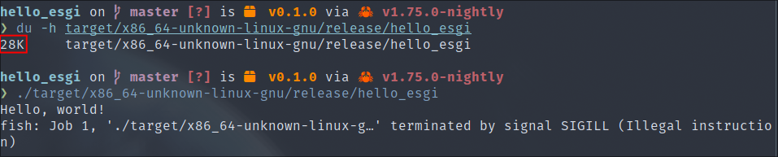
The reduction is quite impressive, from 212 Ko to 28 Ko. At runtime, we can also see that it no longer displays anything when it panics, which is to our advantage in terms of malware development.
We have now reached the last level of optimisation that we can use without having too much impact on the operation of our malware. There are still many other ways of reducing the size of our binary aggressively, but they have too great an impact on the way we program.
For example, we can completely separate ourselves from the standard Rust library (with the #[no_std] macro) and use only functions from the libc directly, which allows us to obtain binary sizes relatively close to those programmed in C.
The disadvantage is that we lose the use of all the external libraries that depend on the standard library, but there are plenty of others that don't, like most cryptographic libraries.
Now that you have all the information you need to optimise Cargo for malware development, I would advise you not to apply all these optimisations at the start of your development phase. In fact, it is possible that some of the features you use may have an impact on the operation of the external libraries you use.
That's why we recommend that you only apply these options at the end of your development phase, and then deactivate those that could cause problems as you go along.
The final source code is provided as an appendix to this course.